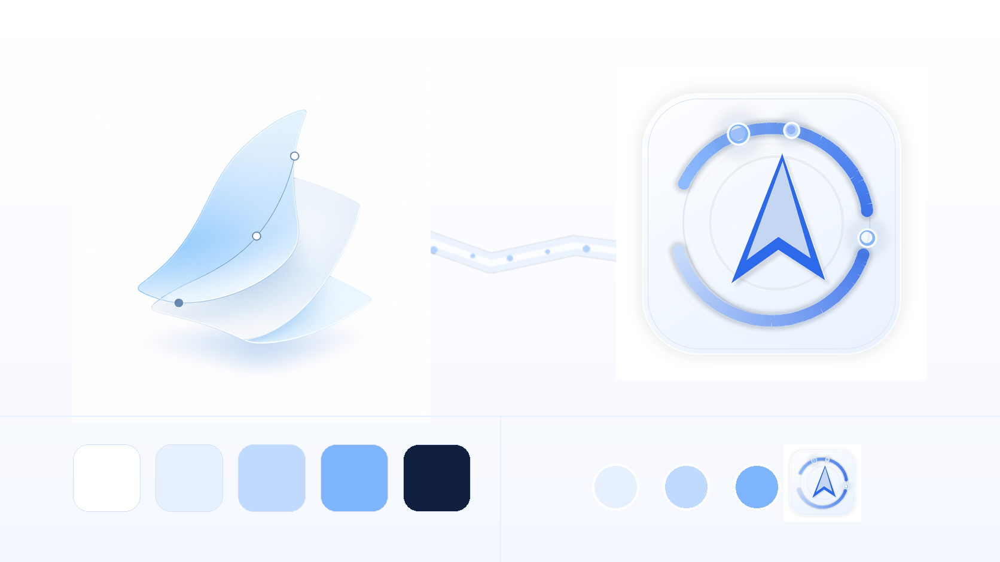

Know what is ready
Compare trusted projects, identify blockers, and inspect materials without opening every folder by hand.
Local Desktop Command Dashboard
HELM shows trusted project status, evidence readiness, deliverables, environment health, and a clean Codex handoff without becoming a chat app or research executor.

Compare trusted projects, identify blockers, and inspect materials without opening every folder by hand.
Read project maps, evidence ledgers, material passports, validator reports, and deliverable indexes.
Copy a compact handoff that points Codex to the next useful step. HELM does not claim to do the research itself.
Boundary